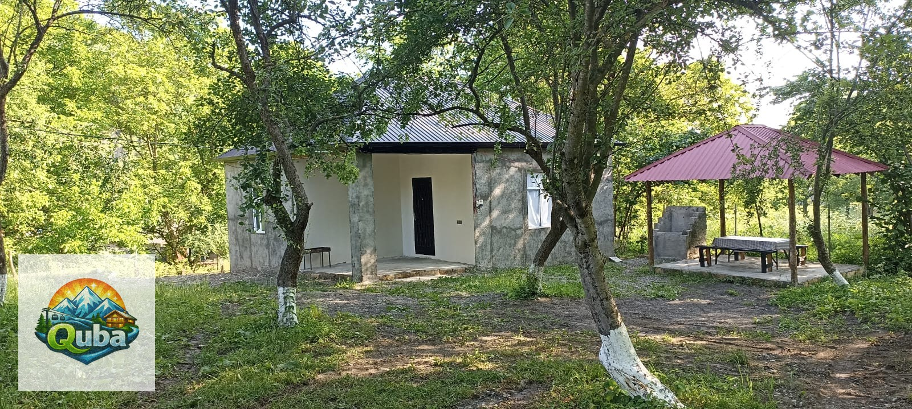

Среди величественных гор Большого Кавказа, в экологически чистом районе Куба, скрывается одна из главных природных достопримечательностей Азербайджана — водопад Афурджа. Этот величественный каскад, срывающийся с высоты 75 метров, по праву считается жемчужиной региона и привлекает тысячи туристов, жаждущих прикоснуться к мощи первозданной природы.
Природное чудо Кавказа
Водопад Афурджа расположен в ущелье реки Афурджачай, в 25 километрах от города Куба. Вода, питающая водопад, стекает с ледников и снежников, расположенных на вершинах окружающих гор. Благодаря этому водопад особенно полноводен весной и в начале лета, когда талые воды достигают максимального объёма.
Сам водопад представляет собой мощный поток воды, срывающийся с отвесной скалы и образующий внизу облако брызг и радужную пыль. Особенно впечатляет вид водопада в солнечную погоду, когда в водяных брызгах образуются радуги. Звук падающей воды слышен ещё за несколько километров до подхода к водопаду.
Происхождение названия
Название «Афурджа» происходит от азербайджанского слова «afurca», что означает «разбрызгивающийся». Это название как нельзя лучше описывает характер водопада, чьи водяные струи разлетаются на множество мельчайших капель, создавая характерное облако брызг вокруг основания.
Маршрут к водопаду
Путь к водопаду Афурджа начинается от трассы Куба-Хачмаз и представляет собой увлекательный пеший маршрут через горный лес. Тропа проходит через живописный буковый лес, где можно увидеть вековые деревья, редкие растения и горных птиц.
📍 Как добраться
От города Куба: двигайтесь по трассе в сторону Хачмаза, затем сверните на дорогу к селению Афурджа. Далее следуйте указателям до начала пешего маршрута.
От «Горного Дома Куба»: наш гостевой дом расположен всего в 15 километрах от начала маршрута. Мы организуем трансфер для наших гостей.

Лучшее время для посещения
Водопад Афурджа прекрасен в любое время года, однако каждый сезон имеет свои особенности:
-
Весна (апрель-май)
Максимальный водопад благодаря талым водам. Особенно красиво в период цвещения горных цветов.
-
Лето (июнь-август)
Тёплая погода, возможность искупаться в естественных бассейнах у подножия водопада.
-
Осень (сентябрь-октябрь)
Багряно-золотистые краски горного леса, меньше туристов, комфортная погода для походов.
-
Зима (ноябрь-март)
Водопад частично замерзает, образуя ледяные сталактиты. Требует специальной экипировки.
Что взять с собой
Для комфортного и безопасного похода к водопаду Афурджа рекомендуем взять следующие вещи:
🎒 Список необходимого
Удобная походная обувь с нескользящей подошвой, тёплая одежда (в горах на 5-10 градусов холоднее, чем в долине), дождевик или непромокаемая куртка, вода и перекус, солнцезащитный крем и очки, фонарик (для возможных ранних выходов), аптечка с пластырями и болеутоляющими.
Фотографические возможности
Водопад Афурджа — настоящий рай для фотографов. Здесь можно сделать потрясающие снимки в любое время суток. Особенно эффектны фотографии, сделанные в «золотой час» — в первые часы после восхода солнца или за несколько часов до заката, когда мягкий свет подчёркивает текстуру воды и создаёт радуги в брызгах.
Для съёмки водопада рекомендуем использовать штатив и длинную выдержку, которая позволит превратить поток воды в шелковистую завесу. Также стоит обратить внимание на окружающий ландшафт: скалы, покрытые мхом, вечнозелёные деревья и горные вершины на заднем плане создают идеальный фон для пейзажных фотографий.
Испытайте мощь природы
Забронируйте номер в «Горном Доме Куба» и отправьтесь к водопаду Афурджа с комфортом
Забронировать